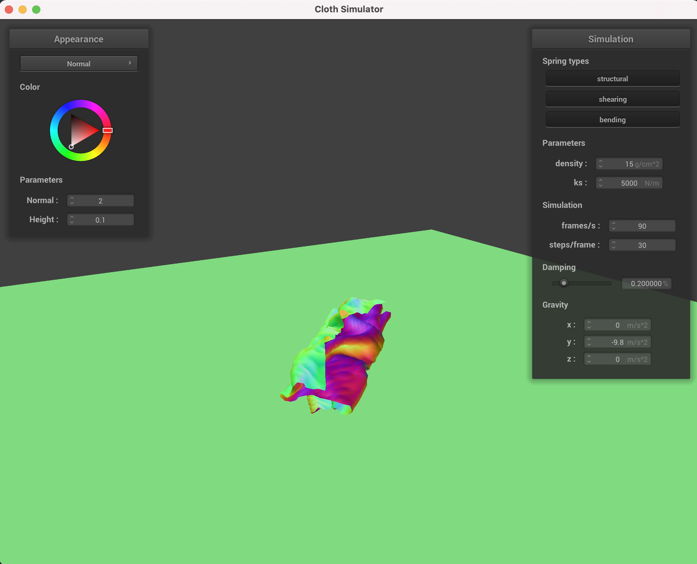

A lower spring constant will reduce the integrity of the cloth and the forces keeping it together so the cloth hangs more directly down and stretches lower. With a higher spring constant, the cloth becomes more stiff so when it rests on the
sphere, it still extends outwards a lot as the springs are preventing it from bending and extending downwards.
ks = 500ks = 5000ks = 50000
Resting on a plane
Part 4. Self Collisions
Default parameters falling cloth
Early state as the cloth just begins to fallIntermediate state where the cloth starts the bend but before it fully collides with the ground

Near-resting state where the cloth has generally fully foldedFinal resting state
Varying density
A lower density cloth is a lighter cloth, all else being equal, so the dominant force in the simulation comes from the spring forces. This means when the cloth hits the ground, it'll bounce comparatively high and at a resting state, it'll be
pretty smooth since the point masses are light enough that the springs can fully extend.
With a high density cloth, the dominant force will come from gravity, so as the cloth starts falling, it immediately folds a lot and doesn't bounce. Additionally, at rest, gravity acts to keep the point masses stationary and crumpled so the
cloth has many folds.
Low density cloth bounces after hitting the groundLow density cloth resting stateHigh density cloth resting state
Varying spring constant
The spring constant generally has an inverse effect compared to density in these simulations. With a low spring constant, gravity/external forces are dominant so the cloth folds easily and remains crumpled at rest.
With a high spring constant, the spring forces will be dominant and try to return the cloth to its normal flat state. Thus, it tends to bounce more upon hitting the ground, and at rest, it's flatter and has less folds.
Low spring constant cloth resting stateHigh spring constant cloth bounces after hitting the groundHigh spring constant cloth resting state